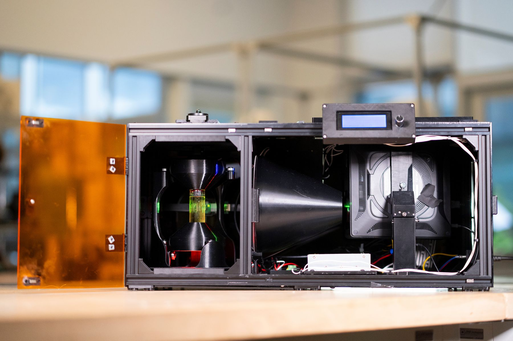
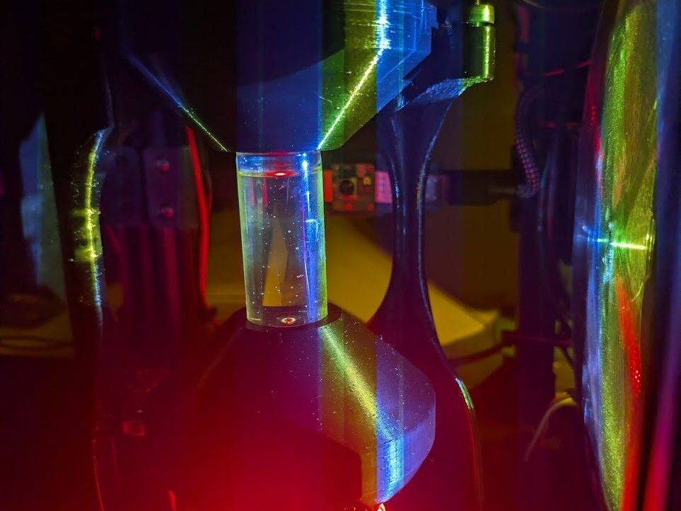
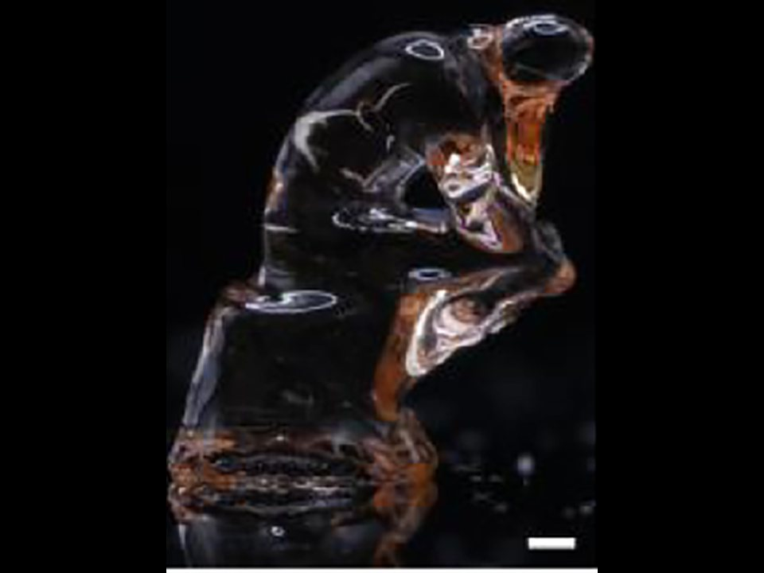
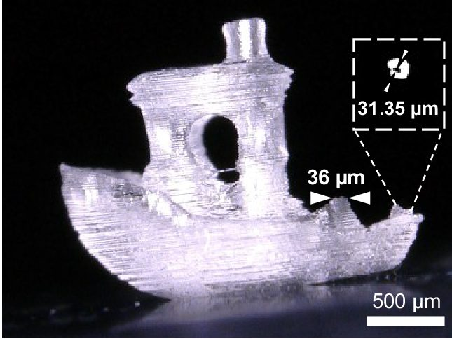
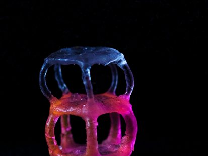

Theme 1
Making advanced VAM widely accessible
Closing the gap between leading laboratories and new entrants through open hardware, shared calibration methods, distributable resin formulations, and better documentation.

Volumetric Additive Manufacturing Symposium
February 4–5, 2027 · University of California, Berkeley
The annual gathering for researchers and practitioners in volumetric additive manufacturing. One day of talks, panels, and posters, followed by a hands-on OpenCAL build workshop.
OpenCAL volumetric printer. Photo: OpenCAL project, UC Berkeley
Organized by
UC Berkeley Department of Mechanical Engineering
Lawrence Livermore National Laboratory Volumetric additive manufacturing team
Jacobs Institute for Design Innovation Supporting partner
Important dates
Dates other than the symposium itself are provisional and will be confirmed when registration opens.
Fall 2026
Registration and call for posters open
Fall 2026
Build workshop applications open
December 2026
Build workshop applications close
February 4, 2027
Symposium: talks, panels, and posters
February 5, 2027
OpenCAL build workshop
About the symposium
Volumetric additive manufacturing (VAM) forms an entire part at once by projecting patterned light into a photopolymer from many angles. In under a decade it has moved from a laboratory demonstration toward applications in biofabrication, optics, soft robotics, and industrial production.
The VAM Symposium is organized by the volumetric printing groups at UC Berkeley and Lawrence Livermore National Laboratory to bring researchers and practitioners in this field together in person. The program is single-track and discussion-oriented, combining plenary talks, moderated panels, a poster session, and extended time for informal exchange.
The 2027 symposium expands to two days. Day 1 follows the established format of talks, panels, and posters. Day 2 introduces a hands-on OpenCAL build workshop, in which participating teams assemble an open-source volumetric printer and take it home.
Volumetric printing
Tomographic and holographic volumetric printing form an entire part at once by projecting computed light patterns into a rotating or static volume of photopolymer.




2027 themes
The 2027 program examines what volumetric printing can adopt from neighboring disciplines, and what the community can do to make the technology more widely accessible. See the eight topic areas distilled from recent literature; suggestions are welcome.
Theme 1
Closing the gap between leading laboratories and new entrants through open hardware, shared calibration methods, distributable resin formulations, and better documentation.
Theme 2
Holographic and phase-modulated light engines, differentiable ray-tracing and wave-optical projection computation, and source-mask optimization from lithography: techniques from photonics, display engineering, and computational imaging that transfer to volumetric printing.
Theme 3
Automatic exposure and in-situ monitoring, learned and physics-based dose optimization, closed-loop control, and data-driven resin and material discovery.
Theme 4
Reports from groups that have built OpenCAL or comparable printers, and a discussion of development priorities informed by successful open-source hardware projects.
Program at a glance
Day 1 · Thursday, February 4
Two plenary talks, three moderated panels, a poster session over a catered lunch, optional lab tours, an open discussion, and an evening reception. 9:00 AM to 6:00 PM, single track.
Day 1 schedule →Day 2 · Friday, February 5
Five to ten teams assemble, align, and calibrate an OpenCAL volumetric printer from a kit, print a first part, and take the machine home. Places are allocated by application.
Workshop details →Speakers
The 2027 lineup will be announced in fall 2026. The entries below are placeholders used to lay out the page until invitations are confirmed.
Venue
The symposium takes place on the UC Berkeley campus. The building and room will be published with registration.

Day 1 is held primarily in person. A video link is provided to registered participants who indicate virtual attendance. The Day 2 build workshop is in-person only.
Organizing committee
Sponsors and partners
Registration is free. Catering, poster boards, and subsidized build kits for the workshop are funded by sponsors and partner organizations.
Sponsorship opportunities are available at several levels, including named support for the OpenCAL build kits. Sponsors are acknowledged on this site, in the printed program, and at the event.
Fund one or more OpenCAL kits for workshop teams.
Support catering, posters, and the reception.
Pre-register to receive the registration link, the call for posters, the build workshop application, and the final program when they are released.